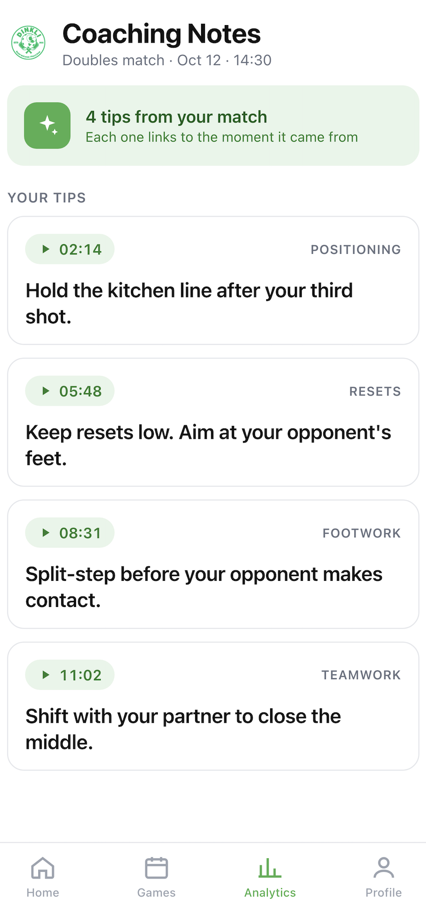
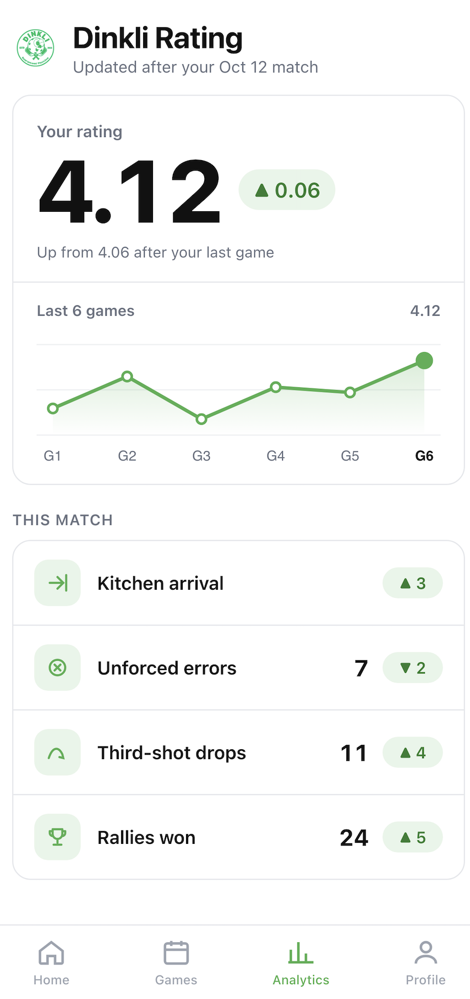
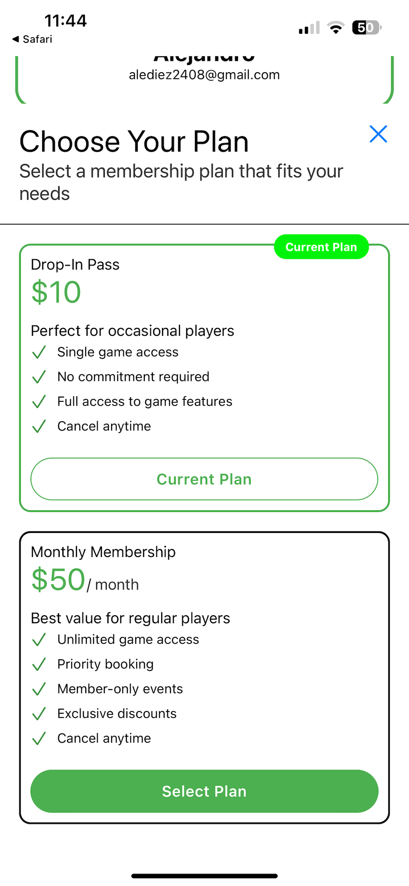
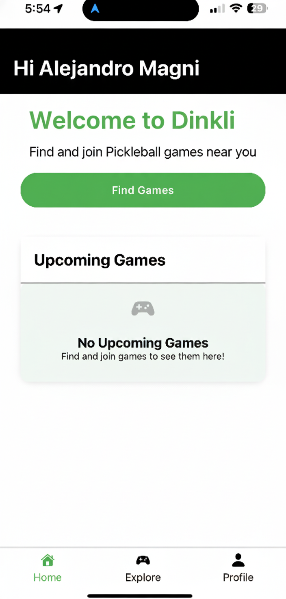

Any app can reserve a court.
Booking alone gives players no reason to choose your courts over the next facility with open slots.

Players add Record & Analyze when they book. After the game, every player on court gets their own cut.



Detection. YOLO object detection identifies each player, paddle and the ball in every frame of video.
Tracking. Detections are linked frame to frame, so every player is followed through the whole game.
Privacy. No audio. No face recognition. Players are matched to their tracks through their booking.
No hardware for you. The crew brings the rig and takes it away. Nothing to install or buy.



